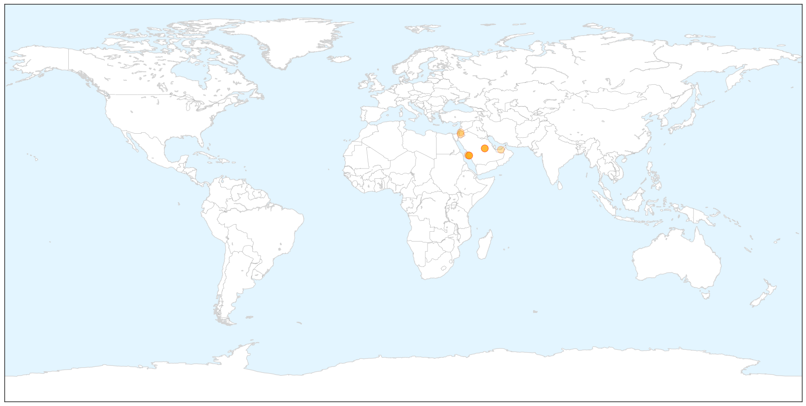
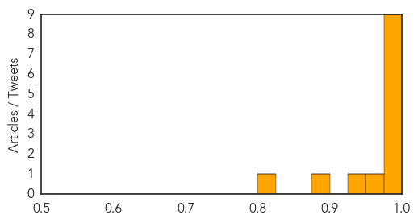
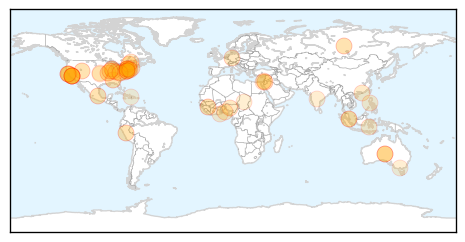

MERS
30-Day Web Trend
0 alerts, 0 warnings

30-Day Twitter Trend
4 alerts, 0 warnings

Article Locations

X

Article Confidences
Top Articles:
- 0.998
- Riyadh, Jordan each report 2 new MERS cases
- 0.997
- Saudi Arabia sees Mers deaths surge
- 0.996
- Saudi Arabia sees Mers deaths surge
- 0.996
- Saudi Arabia sees Mers deaths surge
- 0.995
- Saudi Arabia Reports Surge in MERS Fatalities
- 0.992
- Deaths from MERS virus surge in Saudi Arabia
- 0.984
- Middle East respiratory syndrome coronavirus: transmission, virology and therapeutic targeting to aid in outbreak control
- 0.981
- KBS World Radio
- 0.981
- Saudi Arabia may ban anyone in contact with MERS patients from performing Hajj - Xinhua
- 0.959
- Jordan reports first coronavirus death in 2015
- 0.941
- Deaths from MERS virus improvement in Saudi Arabia
- 0.889
- Arresting MERS: National Guard health staff barred from Haj
- 0.820
- MERS worry as Hajj dates approach
Top Tweets:
-
No tweets found for Aug 28, 2015
Unknown
30-Day Web Trend
0 alerts, 6 warnings

30-Day Twitter Trend
4 alerts, 0 warnings

Article Locations

Article Confidences

Top Articles:
- 0.981
- Legionnaires disease scare at San Quentin prison
- 0.979
- Warning from health service
- 0.973
- News, Sports, Jobs, Community Information - Parkersburg News and Sentinel
- 0.958
- The most from the coast
- 0.951
- Search on for source of new Legionnaires' outbreak at Illinois vet home
- 0.921
- Base Articles
- 0.917
- Chicago Tribune
- 0.917
- Chicago Tribune
- 0.917
- Chicago Tribune
- 0.917
- Chicago Tribune
- 0.917
- Chicago Tribune
- 0.917
- Chicago Tribune
- 0.911
- Birmingham Zoo bird aviary might have exposed visitors to bacterial disease
- 0.902
- Utah man dies of plague days after CDC issues warning
- 0.877
- Jordan reports two new corona virus cases
- 0.861
- Utah man dies of plague in fourth fatal U.S. case this year
- 0.860
- Legionnaires' disease sends San Quentin inmate to hospital
- 0.846
- Legionnaires' Disease Kills 2 in Quebec
- 0.846
- Legionnaires' disease sends California inmate to hospital
- 0.842
- Legionnaires' disease sends California inmate to hospital
- 0.840
- Legionnaires' disease sends California inmate to hospital - MyNorthwest
- 0.827
- San Quentin in "Crisis Mode" After Inmate Tests Positive for Legionnaires' Disease
- 0.808
- Health department: Two dead from Legionnaires' disease at Illino
- 0.801
- Drug-resistant stomach bug rising in Cincinnati
- 0.789
- Brisk Business at Bronx Hotel, Center of Legionnaires’ Outbreak
- 0.767
- Why antibiotics may not work for Lyme disease
- 0.754
- West Chester University says buildings safe from legionella bacteria
- 0.742
- Some pharmacies are already receiving their flu shots to prepare for the flu season
- 0.741
- CDC supplies drug to treat Michael Riley Jr., Texas teen with brain-eating amoeba
- 0.702
- Martha's Vineyard Oyster Beds Closed for Vibrio
- 0.695
- Risk Factors for African Swine Fever on Nigerian Pig Farms
- 0.669
- Canada Cyclospora illnesses are up to 92
- 0.667
- Will more data lead to better public health programs?
- 0.667
- Legionnaires’ disease sends San Quentin inmate to hospital
- 0.664
- More ticks carrying babesiosis parasite, raising risk of serious illness
- 0.658
- Legionnaires’ disease sends California inmate to hospital
- 0.652
- UCH Takes HPV Vaccination To Rural Women
- 0.645
- Doctors seek protection from assault while on duty
- 0.638
- Hong Kong: 21 adult men contract hand, foot and mouth disease in Wong Chuk Hang institution
- 0.616
- Mobile Phones Can Transform Healthcare in Kenya [opinion] (allAfrica.com)
- 0.591
- Health And Family, Lifestyle Features, The Philippine Star
- 0.577
- Australia's Love Affair With Water
- 0.571
- Drugmaker Glaxo shuts down plant over Legionnaires’ bacteria
- 0.565
- Health experts urged to ensure health education
- 0.563
- Malaria vaccine highly effective in small US test
- 0.554
- Man sheds deadly polio virus in feces for 28 years
- 0.547
- Gastro Claims Four in Tandur
- 0.546
- Residents host water balloon bout
- 0.542
- Singapore Red Cross to deploy aid teams to Myanmar flood zone
- 0.535
- Park Hill School District closes pool after several swimmers report flu-like symptoms
Showing top 50 articles...
Top Tweets:
-
No tweets found for Aug 28, 2015